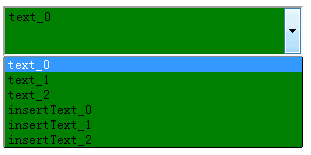
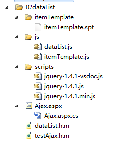
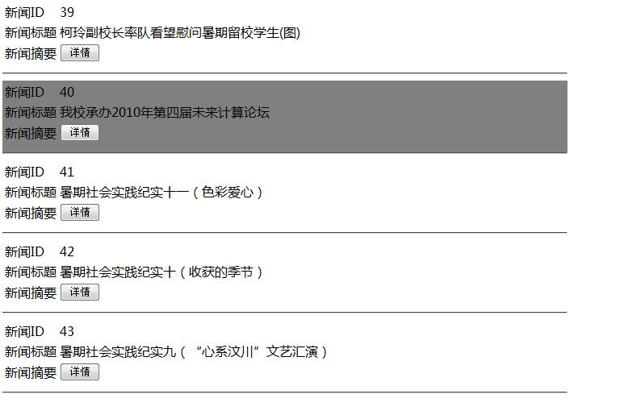
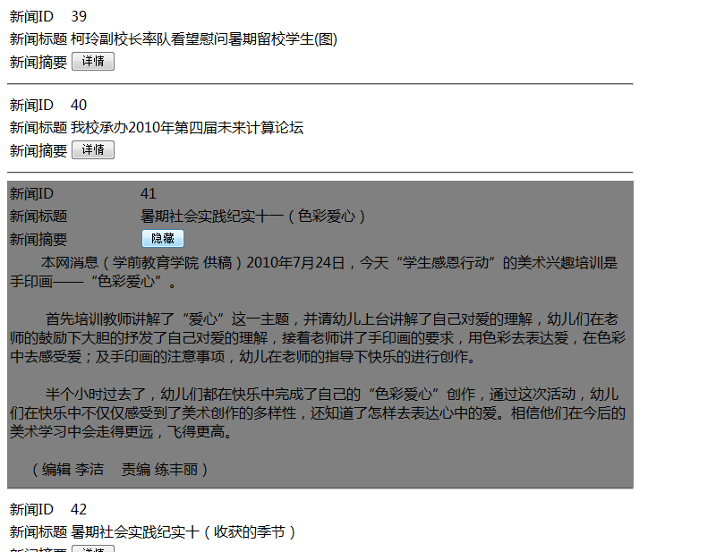
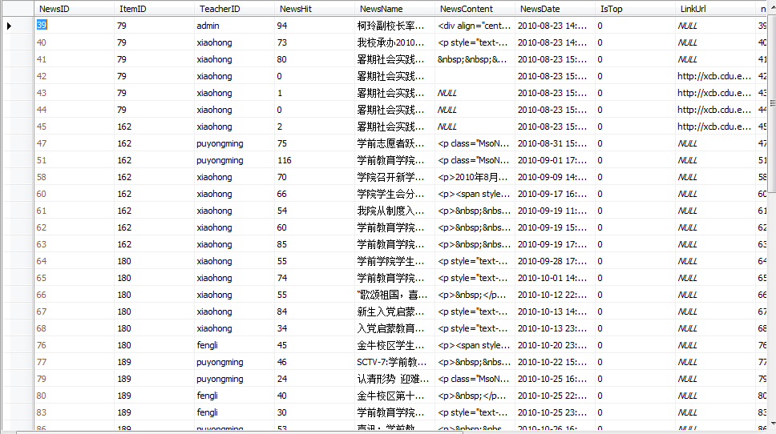
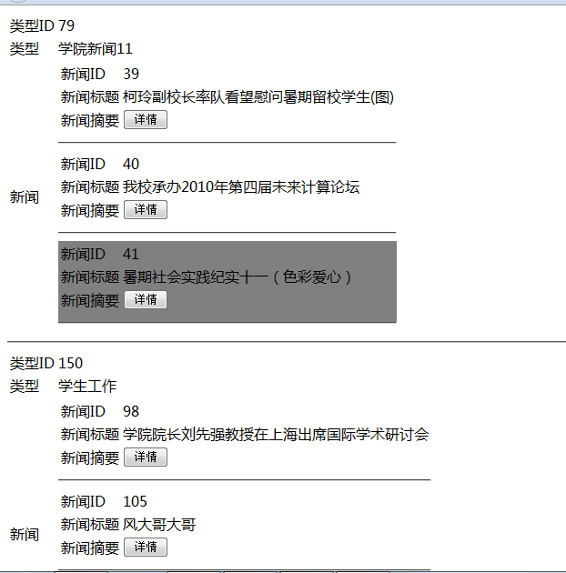

各位大哥晚上好，好久不见。小弟实习了三个月了，由.net转成了java，工作期间正在努力学习。
但是有一点非常痛苦，我不止一次听到一个声音，”.net真的很简单，我原来也学过。直接拖就是了......“
啊！！！感觉好没有技术含量啊！莫法，小弟技术不行，无力辩驳什么。
并且就技术层次本身来说，不论我确实还有很多路要走，就不多说了。
起因
我们最近在做一个项目，其中核心模块需要用到类似于igoogle中那种小工具的功能，当时经过众人商议，
最后决定用jquery写控件。
控件！！！好机会啊！我发现项目需要的功能和.net中的datalist真的非常像，于是很想插进去.......
但是，我那浅薄的水平，以及我那悲剧的实习生头衔，在其他同事面前确实不大说得上话。
最后眼睁睁看着别人写了1more js代码，然后让我去读。
呵呵，不是那个前辈代码写的不好，相反我在他的代码中学了很多东西，当然是带着极其抵触的情绪在努力的看！
总觉得这也不好，那也不好，甚至有时候在抠人家命名规范的问题，总是想推翻一点加上自己的思路......
说到这里，我深刻的感觉团队合作，团队交流，团队协作真的很重要！
你有一个想法，你要如何表达自己的思路，如何写出代码，如何让别人接受你的想法，接受你的代码，
甚至让别人帮助你充实你的想法，真的是一门大学问！
你若是做了一个东西，确实不错，但是你不表现的谦虚，其他同事必定不会买账，根本不会认同你的想法。
而且，一个你觉得很好的点子，在人家的分析后，肯定会发现很多问题，那就要看你如何获得人家的认同与帮助了！
项目过程
就那前辈的代码，我其实发现了一些问题，项目过程中他的代码也确实遇到了一点问题，主要原因就是代码除他之外，没人想去动。
然后站在设计模式的高度来看，他的代码可维护性，可扩展性有点问题，当然我设计模式看了一次也忘得车不多了。
最后在学习前辈的代码，再加上.net控件思路的高度，我自己花了点时间写了两个控件模拟.net中的dropdownlist与datalist。
再次交出代码，抛砖引玉，请各位大哥弄点更好的东西出来吧！！！
因为我也是才学js,代码写的不好，请各位大哥提点下吧！
Dropdownlist
一、效果图（）

因为这个控件是练手的，我需要的是datalist，所以就算起一个探索作用，没有写太多。
其功能就算想模拟.net中的控件，根据不同数据源，生成不同的代码。
最主要是想把事件控制权交出来，让使用这个控件的人不用去关注控件本身，（这也是前辈的主要问题）
二、简单代码
核心代码：
var item = function (value, text) {
this.attribute = {
id: '',
value: value ? value : '',
text: text ? text : '',
title: '',
selected: ''
};
this.htmlElement = null;
this.callBack = {
onClick: null
};
}
item.prototype.bindEvent = function () {
var sender = this;
// alert(sender.dataSource);
var element = sender.htmlElement;
if (sender.callBack.onClick) {
element.unbind("click");
element.bind("click", function () {
sender.callBack.onClick.call(sender);
});
}
}
var dropDownList = function (id) {
this.attribute = {
id: id
};
this.style = {
width: '',
height: ''
};
this.callBack = {
onSelectedChanged: null,
onClick:null
};
this.htmlElement = null;
this.items = [];
this.selectedValue = '';
this.selectedItem = {};
this.dataSourceType = '';
this.dataSource = {}; //应该支持不同数据源
this.dataTextField = '';
this.dataValueField = '';
this.dataTitleField = '';
}
dropDownList.prototype.bindEvent = function () {
var sender = this;
// alert(sender.dataSource);
var element = sender.htmlElement;
if (sender.callBack.onSelectedChanged) {
element.unbind("change");
element.bind("change", function () {
sender.callBack.onSelectedChanged.call(sender);
});
}
if (sender.callBack.onClick) {
element.unbind("click");
element.bind("click", function () {
sender.callBack.onClick.call(sender);
});
}
}
dropDownList.prototype.dataBind = function (element) {
var sender = this;
sender.htmlElement = $('<select id="' + sender["attribute"]["id"] + '"></select>');
$.each(sender.dataSource, function (itemKey, itemValue) {
// alert(itemKey + ":" + itemValue);
var _item = new item();
_item["attribute"]['value'] = itemValue[sender['dataValueField']];
_item["attribute"]['text'] = itemValue[sender['dataTextField']];
_item["attribute"]['title'] = itemValue[sender['dataTitleField']];
sender.items.push(_item);
sender.insertItem(_item);
});
//呈现前，样式加载
sender.styleLoad();
element.append(sender.htmlElement);
}
dropDownList.prototype.styleLoad = function () {
var sender = this;
var element = sender.htmlElement;
$.each(sender["style"], function (styleKey, styleValue) {
// alert(styleKey + ":" + styleValue);
if (styleValue) {
element.css(styleKey, styleValue);
}
});
}
dropDownList.prototype.insertItem = function (optionItem) {
var sender = this;
var element = sender.htmlElement;
var itemSender = optionItem;
// alert(element["id"]);
var option = $('<option></option>');
var optrinAtrribute = optionItem["attribute"];
var id = optrinAtrribute["id"];
var value = optrinAtrribute["value"];
var text = optrinAtrribute["text"];
var title = optrinAtrribute["title"];
var selected = optrinAtrribute["selected"];
if (id && id.length > 0) {
option.attr("id", id);
}
if (value && value.length > 0) {
option.attr("value", value);
}
if (title && title.length > 0) {
option.attr("title", title);
}
if (selected && selected.length > 0) {
option.attr("selected", selected);
}
if (text && text.length > 0) {
option.text(text);
}
itemSender.htmlElement = option;
element.append(option);
}
前端调用：
<!DOCTYPE html PUBLIC "-//W3C//DTD XHTML 1.0 Transitional//EN" "http://www.w3.org/TR/xhtml1/DTD/xhtml1-transitional.dtd">
<html xmlns="http://www.w3.org/1999/xhtml">
<head>
<title></title>
<script src="scripts/jquery-1.4.1.js" type="text/javascript"></script>
<script src="js/dropDownList.js" type="text/javascript"></script>
<script type="text/javascript">
$(document).ready(function () {
var data = [];
for (var i = 0; i < 3; i++) {
data[i] = {};
data[i]["v"] = "value_" + i.toString();
data[i]["t"] = "text_" + i.toString();
}
var $div = $("#divwl");
var drop1 = new dropDownList("drop1");
drop1.dataSource = data;
drop1.dataValueField = "v";
drop1.dataTextField = "t";
drop1.dataTitleField = "v";
drop1.dataBind($div);
for (var i = 0; i < 3; i++) {
var v = "inertValue_" + i;
var t = "insertText_" + i;
var _item = new item(v, t);
drop1.insertItem(_item);
}
drop1.style.width = '300px';
drop1.style.height = '50px';
drop1.style.background = 'green';
drop1.styleLoad();
var funClick = function () {
var dropSender = this.htmlElement;
var selectedValue = dropSender.val()
var $div = $("#text");
$div.html(selectedValue);
};
var funChange = function () {
var dropSender = this.htmlElement;
var selectedValue = dropSender.val()
alert(selectedValue);
};
drop1.items[1].callBack.onClick = funClick;
drop1.items[1].bindEvent();
drop1.callBack.onSelectedChanged = funChange;
drop1.bindEvent();
});
</script>
</head>
<body>
<div id="divwl">
</div>
<div id="text"> </div>
</body>
</html>
Datalist
好了，开始进入本文重点，这也是项目真正需要的，这个版本没有完全完成，在得到大家意见后再改吧！
一、效果图：



所用数据源：

二、思路
原来也读过.net 控件开发一书，对控件开发知识有个大概了解，所以做起来时候还是比较顺手。
① datalist首先提供了一个公共的模板，就是itemtemplate中可以写任何代码包括数据绑定代码，
然后依次循环调用，所以我觉得这个控件需要一个模板保存类似于.net中的html代码，以及数据绑定代码。
当然，我们不可能写在js代码中，于是出现了一下模板文件：
itemTemplate.spt：
<table>
<tr>
<td>
新闻ID
</td>
<td>
{%newsId%}
</td>
</tr>
<tr >
<td >
新闻标题
</td>
<td>
{%newsName%}
</td>
</tr>
<tr >
<td>
新闻摘要
</td>
<td>
<input id="contentMore" value="详情" type="button"/>
</td>
</tr>
<tr >
<td colspan="2" style=" display:none;" class="content">
{%newsContent%}
</td>
</tr>
</table>
<hr/>
{%newsName%} 是模拟Eval("")的写法，后期作为数据绑定使用
② 然后每次循环生成具体的模板js代码如下：itemTemplate.js
/// <reference path="../scripts/jquery-1.4.1.js" />
var itemTemplate = function () {
//源模板文本，现在为itemTemplate.spt
//可能是文本，可能是js文件，可能是字符串
//最终形成字符串传给htmlTemplateText
this.htmlTemplateText = "";
//最终会形成一独立html字符串，dom结构的标签
this.htmlElement = null;
this.idPrefix = "id_"; //id前缀
this.parentId = "";
this.id = "";
this.event = {
onClick: null,
onMousemove: null
};
//将要执行
// this.evetElementSource = {};
this.elementEvent = null;
};
itemTemplate.prototype.getItemElement = function (elementKey) {
var sender = this;
var id = "#" + sender.id + " " + elementKey;
var element = $(id);
return element;
}
//elementKey #id、 .className、 htmlElement
itemTemplate.prototype.bindElementEvent = function (elementKey, eventType, funcName) {
var sender = this;
var id = "#" + sender.id + " " + elementKey;
var element = $(id);
if (funcName) {
element.unbind(eventType);
element.bind(eventType, function () {
funcName.call(sender);
});
}
}
//elementKey #id、 .className、 htmlElement
itemTemplate.prototype.bindAllElementEvent = function () {
var sender = this;
var itemElementEvents = sender.elementEvent;
// alert(element+"=="+id);
//数据项元素事件绑定
$.each(itemElementEvents, function (eventObjKey, eventObj) {
var elementKey = eventObj.elementKey;
var eventType = eventObj.eventType;
var funcName = eventObj.funcName;
sender.bindElementEvent(elementKey, eventType, funcName);
});
}
itemTemplate.prototype.bindEvent = function () {
var sender = this;
var element = sender.htmlElement;
var events = sender.event;
$.each(events, function (eventKey, funcName) {
// alert(funcKey + "---" + funcValue);
if (funcName) {
var _event = eventKey;
_event = _event.substring(2, _event.length);
_event = _event.toLowerCase();
element.unbind(_event);
element.bind(_event, function () {
funcName.call(sender);
});
}
});
};
itemTemplate.prototype.load = function (itemIndex, itemDataSource) {
var sender = this;
var id = sender.parentId + "_" + sender.idPrefix + itemIndex;
sender.id = id;
var element = $("<div id='" + id + "'></div>");
var html = "";
var _templateText = sender.htmlTemplateText;
tempHtm = _templateText;
$.each(itemDataSource, function (i, item) {
var id = item;
var regStr = "/\\{%" + i + "%\\}/g";
var reg = eval(regStr);
tempHtm = tempHtm.replace(reg, item);
});
html = tempHtm;
element.append($(html))
sender.htmlElement = element;
sender.bindEvent();
};
技术细节便不说了，其主要采用正则表达式方式替换相应内容，所以完全根据我们提供的数据源而定：
③ 外层datalist代码：dataList.js
/// <reference path="../scripts/jquery-1.4.1.js" />
/*
思考：
1 如何给数据项某个html标签添加事件
因为我们并不知道生成的dom树是什么，所以模板里面的html标签无法绑定事件，暂时只能后期绑定
*/
/* 控件生成流程
*/
var dataList = function (id, templateUrl) {
this.attribute = {
id: id
};
this.style = {
width: "",
height: ""
};
this.itemEvent = {
onClick: null,
onDblclick: null,
onKeydown: null,
onKeypress: null,
onKeyup: null,
onMousedown: null,
onMousemove: null,
onMouseout: null,
onMouseover: null,
onMouseup: null
};
this.itemElementEvent = {};
// this.itemElementEvent = {
// one: {
// elementKey: "",
// eventType: "",
// funcName: null
// }
// };
this.htmlElement = null;
this.templateUrl = templateUrl ? templateUrl : ""; //提供项目模板地址
this.htmlTemplateText = "";
this.items = [];
this.dataSource = {}; //应该支持不同数据源
};
dataList.prototype.init = function () {
var sender = this;
var templateUrl = sender.templateUrl;
if (!templateUrl || templateUrl.length == 0)
templateUrl = "itemTemplate/itemTemplate.spt";
this.htmlTemplateText = getAjaxStr(templateUrl);
var htmlElement = $("<div id='" + sender.attribute.id + "'></div>");
sender.htmlElement = htmlElement;
};
dataList.prototype.dataBind = function (element) {
this.init();
var sender = this;
var templateText = sender.htmlTemplateText;
var itemEvent = sender.itemEvent;
var itemElementEvents = sender.itemElementEvent;
//需要替换itemTemplate
var itemIndex = 0;
$.each(sender.dataSource, function (dataKey, dataValue) {
var _item = new itemTemplate();
_item.parentId = sender.attribute.id;
_item.htmlTemplateText = templateText;
_item.event = itemEvent;
_item.elementEvent = itemElementEvents;
//传递父ID ,当前模板编号，源模板，当前项数据项源，事件绑定源
_item.load(itemIndex, dataValue);
var _itemElement = _item.htmlElement;
sender.items.push(_item);
sender.insertDomItem(_itemElement);
itemIndex++;
});
//呈现前，样式加载
sender.styleLoad();
element.append(sender.htmlElement);
//模板中的html标签的事件绑定
var items = sender.items;
$.each(items, function (i, item) {
item.bindAllElementEvent();
});
};
dataList.prototype.styleLoad = function () {
var sender = this;
var element = sender.htmlElement;
$.each(sender.style, function (styleKey, styleValue) {
// alert(styleKey + ":" + styleValue);
if (styleValue) {
// alert(element);
element.css(styleKey, styleValue);
}
});
}
dataList.prototype.insertDomItem = function (domItem) {
var sender = this;
var element = sender.htmlElement;
element.append(domItem);
};
//dataList.prototype.bindItemEvent = function (domItem) {
// var sender = this;
// var element = sender.htmlElement;
// element.append(domItem);
//};
//dataList.prototype.bindEvent = function () {
// var sender = this;
// var element = sender.htmlElement;
// var events = sender["event"];
// $.each(events, function (eventKey, funcName) {
// // alert(funcKey + "---" + funcValue);
// if (funcName) {
// var _event = eventKey;
// _event = _event.substring(2, _event.length);
// _event = _event.toLowerCase();
// element.unbind(_event);
// element.bind(_event, function () {
// funcName.call(sender);
// });
// }
// });
//};
//异步获取文件
function getAjaxStr(url) {
var templateStr = "";
$.ajax({
url: url,
async: false,
dataType: "html",
success: function (result) {
templateStr = result;
if (templateStr)
return templateStr;
},
error: function (e) {
alert("模板加载错误：" + e.toString());
}
});
return templateStr;
}
③ 前台调用界面代码：
<!DOCTYPE html PUBLIC "-//W3C//DTD XHTML 1.0 Transitional//EN" "http://www.w3.org/TR/xhtml1/DTD/xhtml1-transitional.dtd">
<html xmlns="http://www.w3.org/1999/xhtml">
<head>
<title></title>
<script src="scripts/jquery-1.4.1.js" type="text/javascript"></script>
<script src="js/itemTemplate.js" type="text/javascript"></script>
<script src="js/dataList.js" type="text/javascript"></script>
<script type="text/javascript">
$(document).ready(function () {
var dataSource = {};
$.ajax({
type: "post",
url: "Ajax.aspx",
type: "json",
async: false,
success: function (data) {
dataSource = data;
}
});
var $divHtml = $("#html");
var $div = $("#wl");
var $div1 = $("#wl1");
var itemElementEvents = {
contentClick: {
elementKey: "#contentMore",
eventType: "click",
funcName: contentMoreClick
}
};
var list = new dataList("divwl");
list.itemEvent.onMousemove = itemmousemove;
list.itemEvent.onMouseout = itemmouseout;
list.itemElementEvent = itemElementEvents;
list.style.width = "700px";
list.dataSource = dataSource;
list.dataBind($div);
function contentMoreClick() {
var sender = this;
var newsContent = sender.getItemElement(".content");
var contentMore = sender.getItemElement("#contentMore");
if (newsContent.css("display") == "none") {
contentMore.attr("value", "隐藏");
newsContent.css("display", "");
} else {
contentMore.attr("value", "详情");
newsContent.css("display", "none");
}
}
function itemmousemove() {
var sender = this;
var $ee = sender.htmlElement;
$ee.css("background", "Gray");
}
function itemmouseout() {
var sender = this;
var $ee = sender.htmlElement;
$ee.css("background", "white");
}
});
</script>
</head>
<body>
<div id="html" style="display: block">
</div>
<div id="wl">
</div>
<div id="wl1">
</div>
</body>
</html>
大概代码如上，看一下调用界面基本知道如何使用的。
在此我有个没有解决的问题，请各位大哥帮下忙：
除模板之中的html dom 结构没有前期事件绑定外，其他生成的dom都是在展现前便绑定事件：
//呈现前，样式加载
sender.styleLoad();
element.append(sender.htmlElement);
//模板中的html标签的事件绑定
var items = sender.items;
$.each(items, function (i, item) {
item.bindAllElementEvent();
});
其实这个代码最先是写在itemTemplate.js文件中的，在没有将dom append到页面中，但是因为dom结构没有生成，我无法通过除以上的方法找到
对应html标签，所有无法做事件绑定，这里把我弄模糊了。各位大哥有兴趣看了代码便和我说说吧，代码会跟进。
今天又更新了一点代码，有点变化，现在先弄上datalist嵌套的用法，具体的代码后面点看有没有需要弄出来
效果：其实就是新闻类型嵌套一个新闻列表

<!DOCTYPE html PUBLIC "-//W3C//DTD XHTML 1.0 Transitional//EN" "http://www.w3.org/TR/xhtml1/DTD/xhtml1-transitional.dtd">
<html xmlns="http://www.w3.org/1999/xhtml">
<head>
<title></title>
<script src="scripts/jquery-1.4.1.js" type="text/javascript"></script>
<script src="js/itemTemplate.js" type="text/javascript"></script>
<script src="js/dataList.js" type="text/javascript"></script>
<script type="text/javascript">
$(document).ready(function () {
var dataItems = {};
$.ajax({
type: "post",
url: "Ajax.aspx?sql=select top 5 * from Item where ItemKind=1 ",
type: "json",
async: false,
success: function (data) {
dataItems = data;
}
});
var $div = $("#wl");
var listItem = new dataList("newsItem", "itemTemplate/items.spt");
var itemElementEvents = {
loadItemNews: {
elementKey: "#itemNews",
eventType: "ready",
funcName: elementDatabind
}
};
listItem.itemElementEvent = itemElementEvents;
listItem.dataSource = dataItems;
listItem.dataBind($div);
function elementDatabind() {
var sender = this;
var $itemId = sender.getItemElement("#itemId");
var $itemNews = sender.getItemElement("#itemNews");
var listItemNews = new dataList("news", "itemTemplate/itemTemplate.spt");
var _itemElementEvents = {
contentClick: {
elementKey: "#contentMore",
eventType: "click",
funcName: contentMoreClick
}
};
var id = $itemId.html();
var s = $itemNews.html();
var dataNews = {};
$.ajax({
type: "post",
url: "Ajax.aspx?sql=select top 3 newsId,newsName, newsContent from news where itemId='" + id + "' ",
type: "json",
async: false,
success: function (data) {
dataNews = data;
}
});
listItemNews.itemEvent.onMousemove = itemmousemove;
listItemNews.itemEvent.onMouseout = itemmouseout;
listItemNews.itemElementEvent = _itemElementEvents;
listItemNews.dataSource = dataNews;
listItemNews.dataBind($itemNews);
}
function contentMoreClick() {
var sender = this;
var newsContent = sender.getItemElement(".content");
var contentMore = sender.getItemElement("#contentMore");
if (newsContent.css("display") == "none") {
contentMore.attr("value", "隐藏");
newsContent.css("display", "");
} else {
contentMore.attr("value", "详情");
newsContent.css("display", "none");
}
}
function itemmousemove() {
var sender = this;
var $ee = sender.htmlElement;
$ee.css("background", "Gray");
}
function itemmouseout() {
var sender = this;
var $ee = sender.htmlElement;
$ee.css("background", "white");
}
});
</script>
</head>
<body>
<div id="wl">
</div>
</body>
</html>
等以后代码完善了，我在整理发出吧。